Modeling spatial dependence through latent Gaussian models with spatial copulas
Environmental and Ecological Statistics Conference 2025
University of Iceland
UK Climate Projections on a 5km Grid
- UKCP Local Projections on a 5km grid over the UK (1980-2080) [1]
- Challenge: Modeling maximum daily precipitation in yearly blocks
- 43,920 spatial locations on a 180 x 244 grid
- 99 years of projections
- Location-specific GEVt distributions
- Four parameters per location as in [2]
- Location, Trend, Scale, Shape
- Two aspects of spatial dependence:
- Parameter-level (Latent Gaussian Models)
- Data-level (Copulas)

Extended LGM: Multivariate Link Function
- Joint GEV model for precipitation extremes
Data \[ \begin{gathered} y_{i,t} \mid \mu_i, \sigma_i, \xi_i, \Delta_i, x_{i,t} \sim \text{GEV}(\mu_{i,t}, \sigma_i, \xi_i) \\ \mu_{i,t} = \mu_i \cdot (1 + \Delta_i x_{i,t}) \end{gathered} \]
Latent field [2] \[ \begin{gathered} \boldsymbol\eta_i = \begin{pmatrix} (\psi_1, \tau_1, \phi_1, \gamma_1)^\intercal \\ \vdots \\ (\psi_n, \tau_n, \phi_n, \gamma_n)^\intercal \end{pmatrix} \sim \mathcal{N}(\boldsymbol{\mu}(\theta), \mathbf{Q}^{-1}(\theta)) \\ (\psi_i, \tau_i, \phi_i, \gamma_i) = (\log \mu_i, \log \sigma_i - \log \mu_i, f(\xi_i), \log \Delta_i) \end{gathered} \]
Hyper-parameters \(\theta =\) e.g. mean, range, variance, spatial correlation
Max-and-Smooth [3]
Two-Step Approach
- Max Step: Maximum Likelihood
- Independent local estimates \(\hat{\eta}_i\)
- Asymptotic normality: \[ \hat{\eta}_i \stackrel{a}{\sim} N(\eta_i, \mathbf{Q}_{\eta y,i}^{-1}) \]
- Observed information matrix \(\mathbf{Q}_{\eta y,i} = -\nabla^2\ell_i(\hat{\eta}_i)\)
- Smooth Step: Spatial Model
- Gaussian approximation: \[ \hat{\eta} \mid \eta \sim N(\eta, \mathbf{Q}_{\eta y}^{-1}) \]
- Latent field prior: \[ \eta \mid \theta \sim N(\boldsymbol \mu(\theta), \mathbf{Q}_\eta(\theta)^{-1}) \]
- Hyperprior: \(p(\theta)\)
Conceptually: MLEs \(\hat{\eta}_i\) and precision matrices \(\mathbf{Q}_{\eta y,i}\) are sufficient statistics.
“…you can actually gain information by throwing information away…”
Stephen M. Stigler, The Seven Pillars of Statistical Wisdom
Computational Implementation
Efficient Two-Stage Implementation
Max Step (TMB)
- Template Model Builder [4] for maximum likelihood
- Automatic differentiation
- Parallel processing of station-wise estimates
- Efficient sparse Hessians
Smooth Step (Stan)
- Full Bayesian posterior via HMC [5]
- BYM2 spatial prior implementation
- Scales well to large number of parameters
- Use
csr_times_vector()for data-level likelihood
- Get MLEs and Hessians from TMB
- Pass \(\hat \eta\) and CSR version of \(L_{\eta y}\) into Stan
- Stan gives full posterior of Gaussian-Gaussian model
Max vs. Smooth
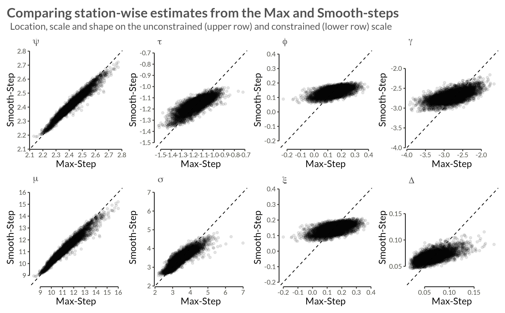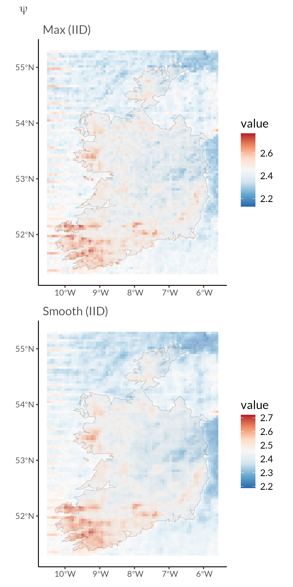
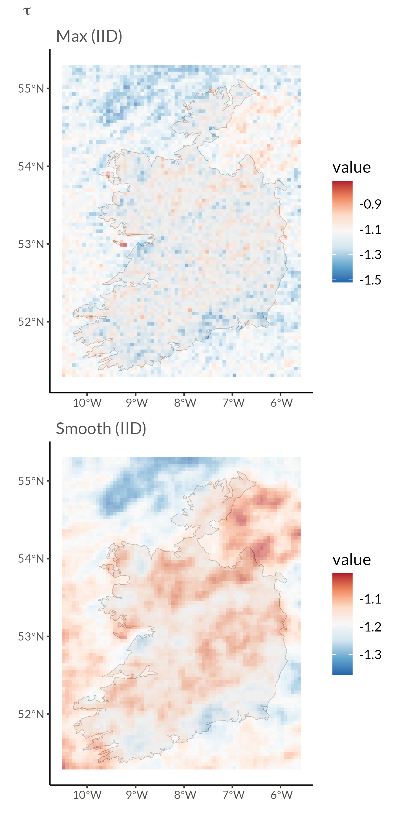

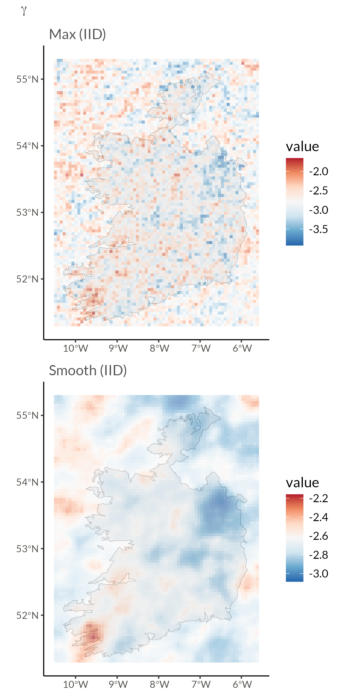
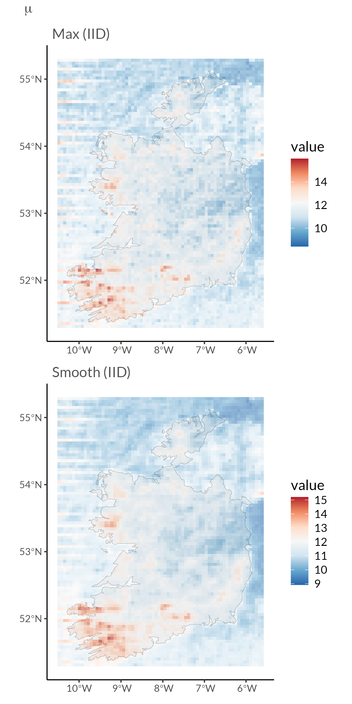
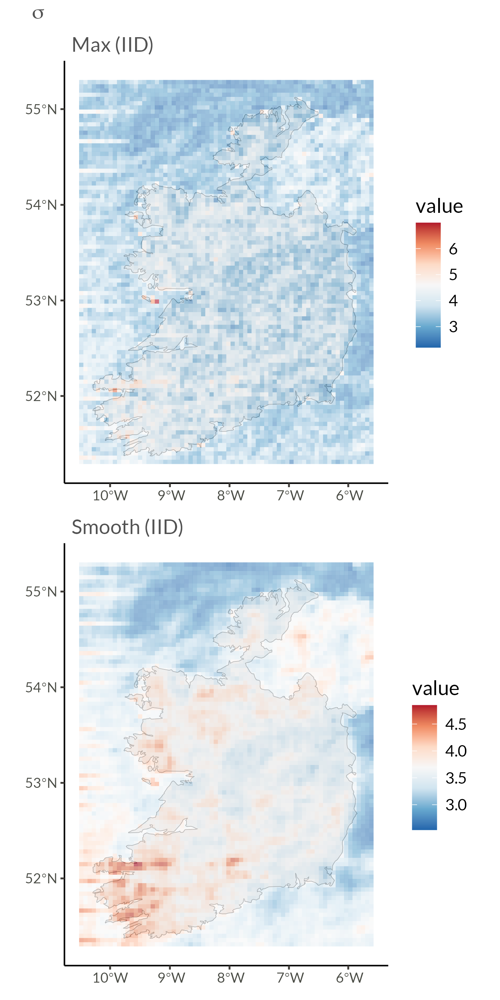

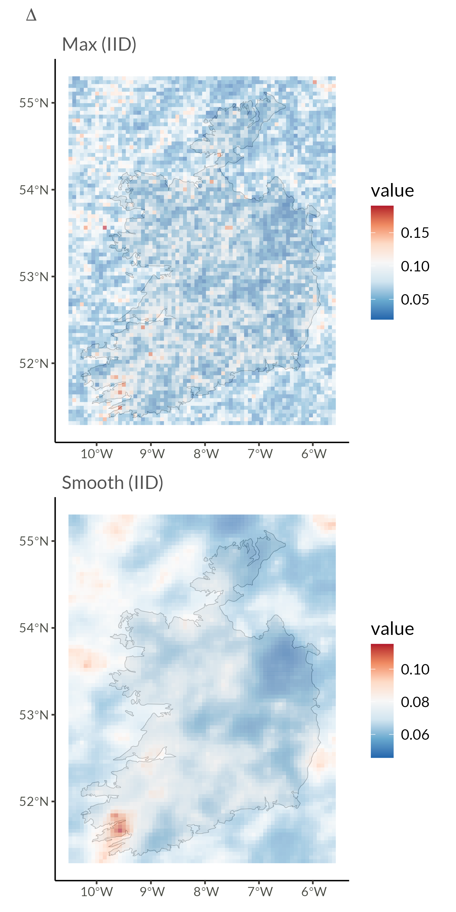
From Data-level Independence to Dependence
Parameter-level Dependence
- Assumes conditional independence
- Biased joint probability estimates
- Underestimates parameter variance
Copula
- Improves joint probabilities
- Enhances spatial risk assessment
- Better variance estimates
Sklar’s Theorem: For any multivariate distribution \(H\), there exists a unique copula \(C\) such that:
\[ H(\mathbf x) = C(F_1(x_1), \dots, F_d(x_d)) \]
where \(F_i\) are marginal distributions. We can also write this as a density
\[ h(x) = c(F_1(x_1), \dots, F_d(x_d)) \prod_{i=1}^d f_i(x_i) \]
Copulas?

Gaussian AR(1) Process
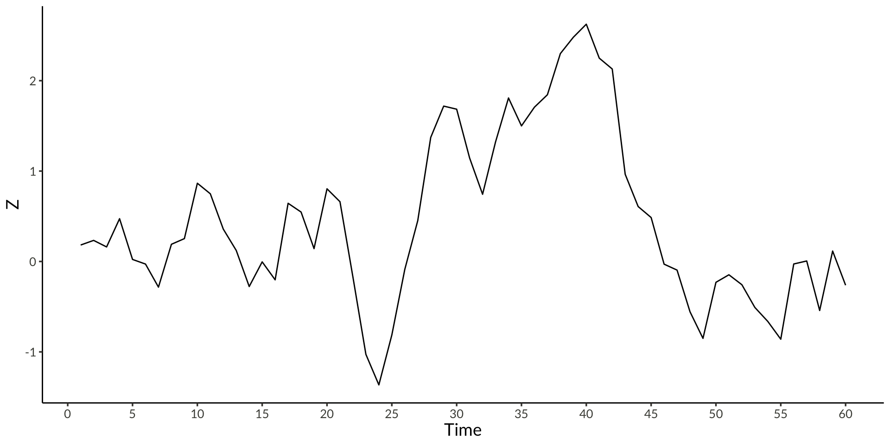Copula?
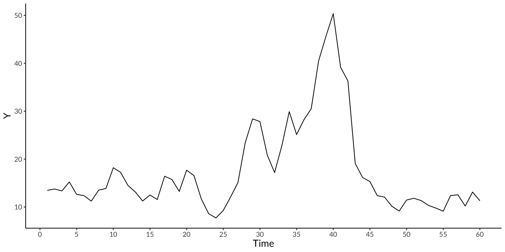GEV AR(1) Process?

From Gaussian to GEV
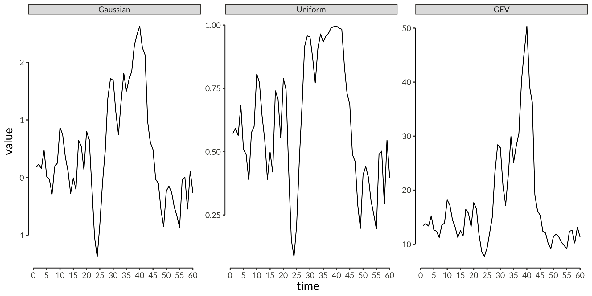Spatial Gaussian Data
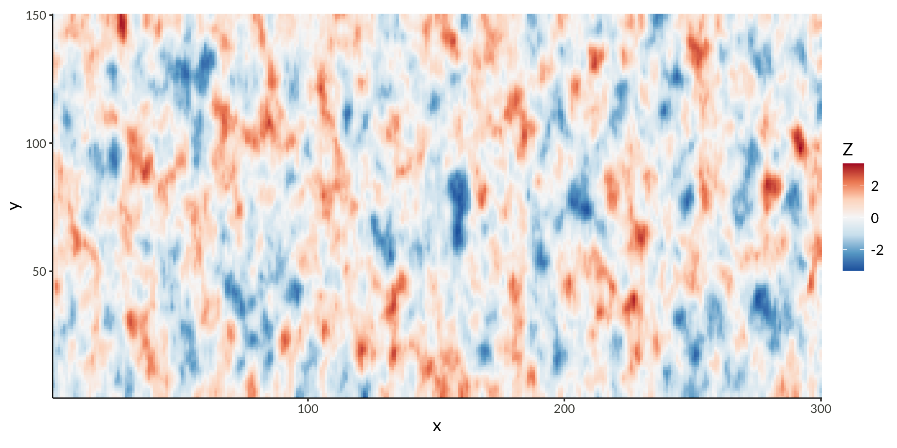Transformed to Uniform
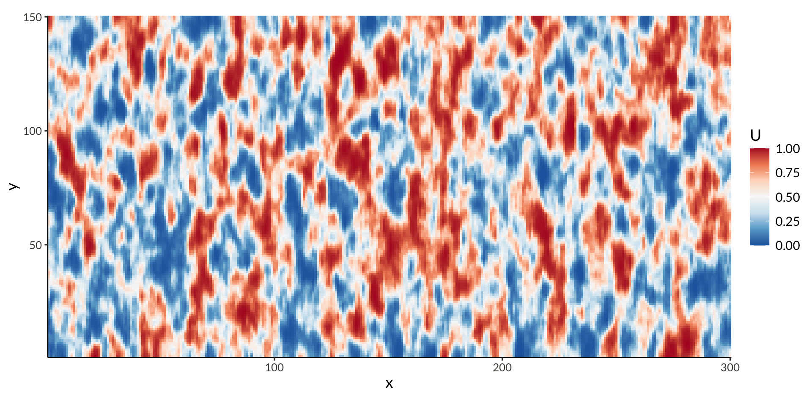Transformed to GEV(11, 4, 0.2)
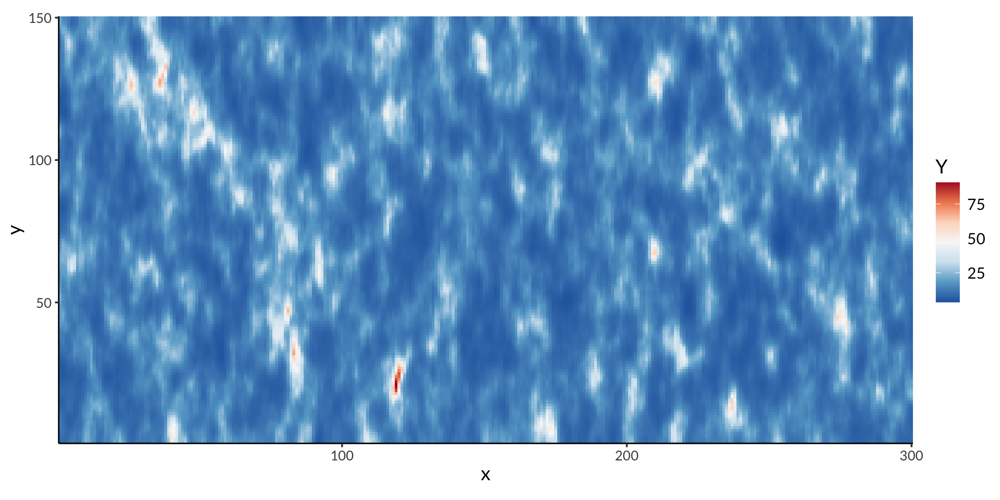It’s just a density

Large-Scale Spatial Gaussian Copula?
\[ \begin{gathered} \log h(\mathbf x) = \log c\left(F_1(x_1), \dots, F_d(x_d)\right) + \sum_{i=1}^d \log f_i(x_i) \end{gathered} \]
Marginal CDFs
- \(F_i(x_i)\) is \(\mathrm{GEV}(\mu_i, \sigma_i, \xi_i)\)
- Can model parameter dependence with BYM2
\[ \begin{aligned} \log h(\mathbf x) &= \log c(u_1, \dots, u_d) \\ &+ \sum_{i=1}^d \log f_{\mathrm{GEV}}(x_i \vert \mu_i, \sigma_i, \xi_i) \\ u_i &= F_{\mathrm{GEV}}(x_i \vert \mu_i, \sigma_i, \xi_i) \end{aligned} \]
Gaussian Copula
- Matérn-like precision matrix \(\mathbf{Q}\) [6]
- If \(\mathbf{Q} = \mathbf{I}\) simplifies to independent margins
- Scaled so \(\boldsymbol{\Sigma} = \mathbf{Q}^{-1}\) is correlation matrix
- Need to calculate marginal variances [7–9]
- How to generate, scale and compute with \(\mathbf{Q}\) quickly (for MCMC)?
\[ \begin{aligned} \log c(\mathbf u) &= \frac{1}{2}\left(\log |\mathbf{Q}| - \mathbf{z}^T\mathbf{Q}\mathbf{z} + \mathbf{z}^T\mathbf{z}\right) + \text{constant} \\ \mathbf{z} &= \Phi^{-1}(\mathbf u) \end{aligned} \]
Copula-Extended Max-and-Smooth
Three-Step Approach with Spatial Dependence
- Copula Step: Copula Parameters
- Estimate copula parameters \((\rho_1, \rho_2)\) using empirical CDF
- Max Step: Copula-Based Likelihood
- Joint estimation across replicates (not locations): \[ \ell(\theta|Y) = \sum_{t=1}^T \left[\ell_{\text{GEV}}(Y_{t}) + \ell_{\text{copula}}(Z_t)\right] \]
- Where \(Z_t = \Phi^{-1}(F_{\text{GEV}}(Y_t))\)
- Precision matrix \(\mathbf{Q}\) with parameters \(\rho_1, \rho_2, \nu\)
- Smooth Step: Enhanced Spatial Model
- Unchanged Gaussian approximation: \[ \hat{\eta} \mid \eta \sim N(\eta, \mathbf{Q}_{\eta y}^{-1}) \]
- Now \(\mathbf{Q}_{\eta y}\) includes dependence information from copula
- Parameter-level spatial priors: \[ \eta \mid \theta \sim N(0, \mathbf{Q}_\eta(\theta)^{-1}) \]
Hessians

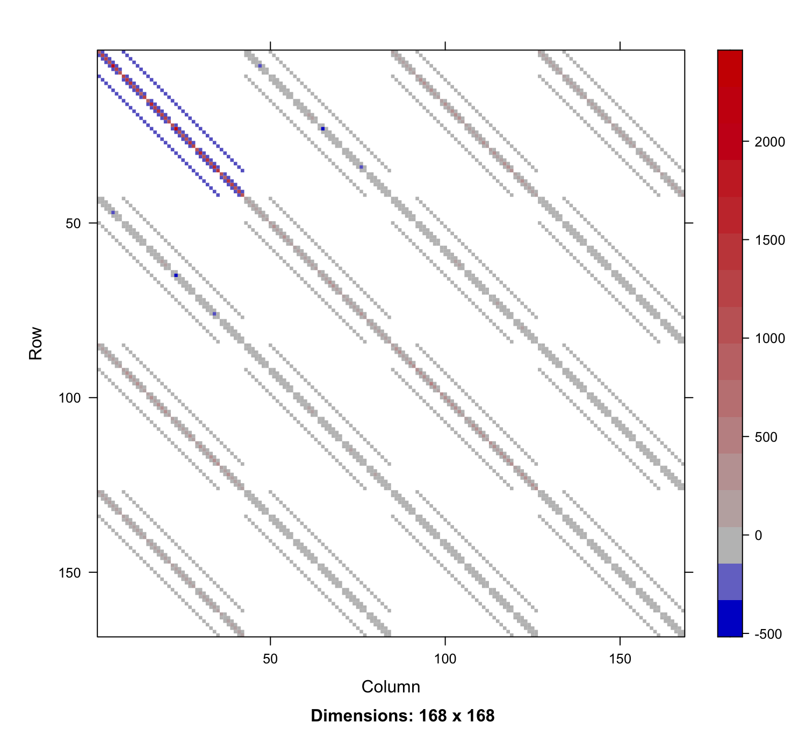
Cholesky Factors
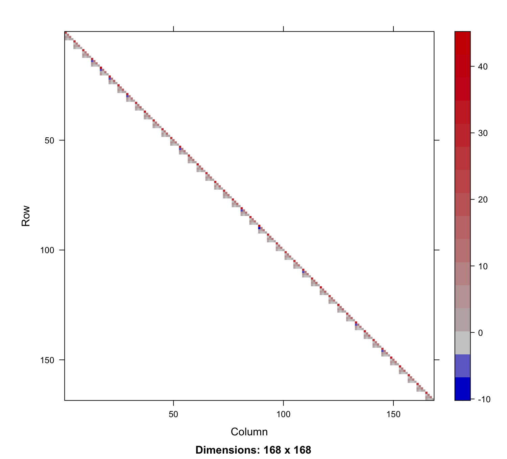
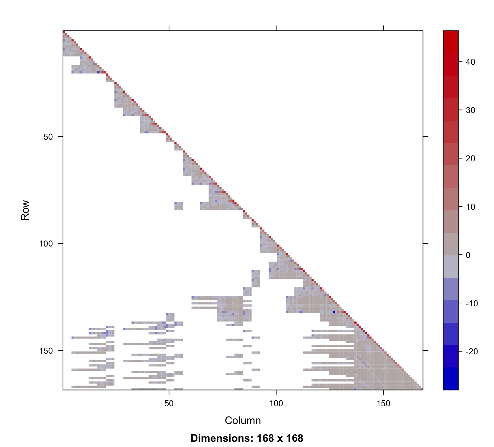
Computational Implementation
Efficient Three-Stage Implementation
Copula Step (recently finished)
- Use
eigenin C++ for efficient calculations as shown before
Max Step (TMB)
- Template Model Builder [4] for maximum likelihood
- Automatic differentiation
- Parallel processing of station-wise estimates
- Efficient sparse Hessians
- Estimate copula parameters using R package in development
- Get MLEs and Hessians from TMB
- Pass \(\hat \eta\) and CSR version of \(L_{\eta y}\) into Stan
- Stan gives full posterior of Gaussian-Gaussian model
Results
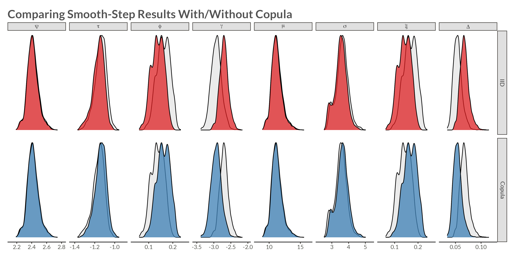Summary and Conclusions
Methodology
- Copula-Extended Latent Gaussian Model
- Matérn-like Gaussian copula implementation
- Max-and-Smooth for fast large-scale inference
Computational Implementation
- Three-stage pipeline combining specialized tools:
- Copula parameter estimation
- TMB for ML and sparse Hessians
- Stan for fast Gaussian-Gaussian posterior sampling
Future Direction
- Application to full UKCP Local Projections (5km grid)
- Extension to linear predictors and space-time dependence
- t-copula for tail dependence
- Integration with risk assessment frameworks
- Further software development for better user interface